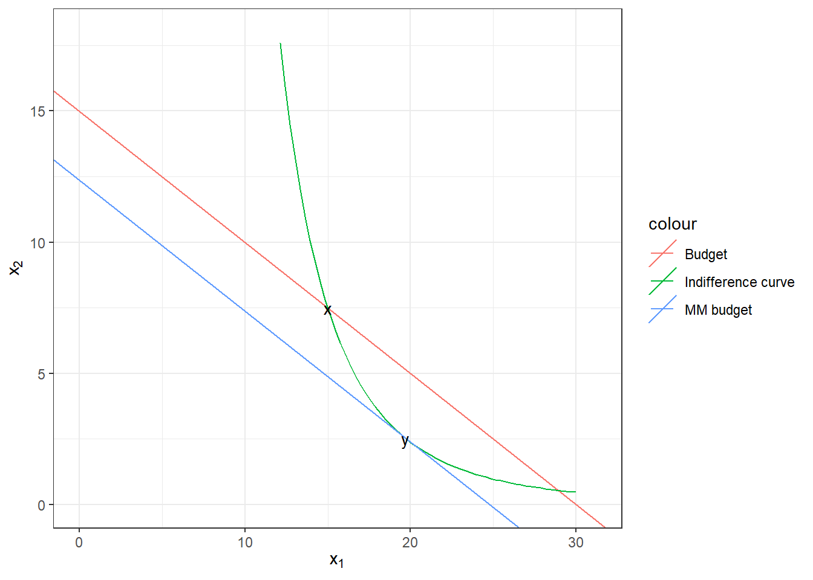
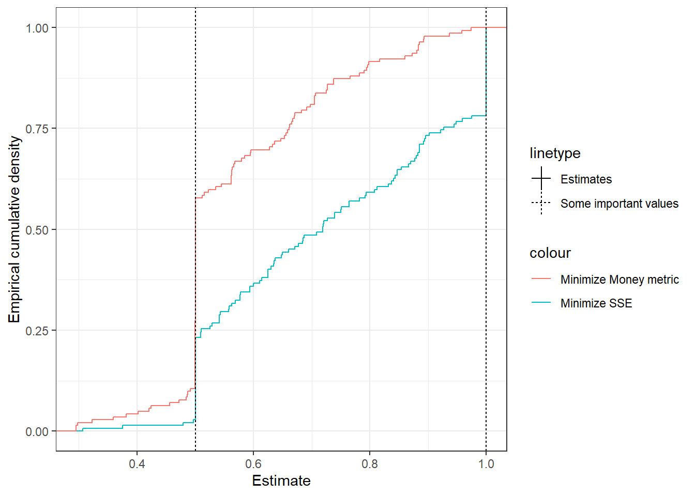
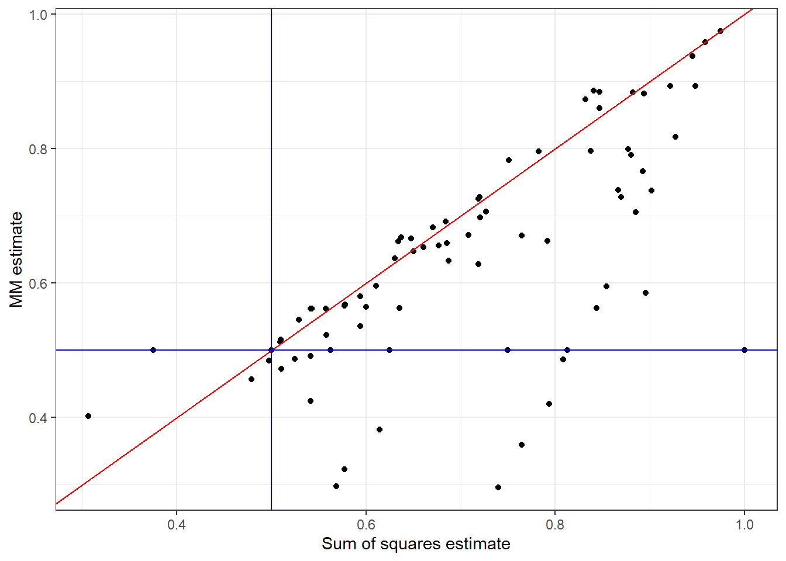
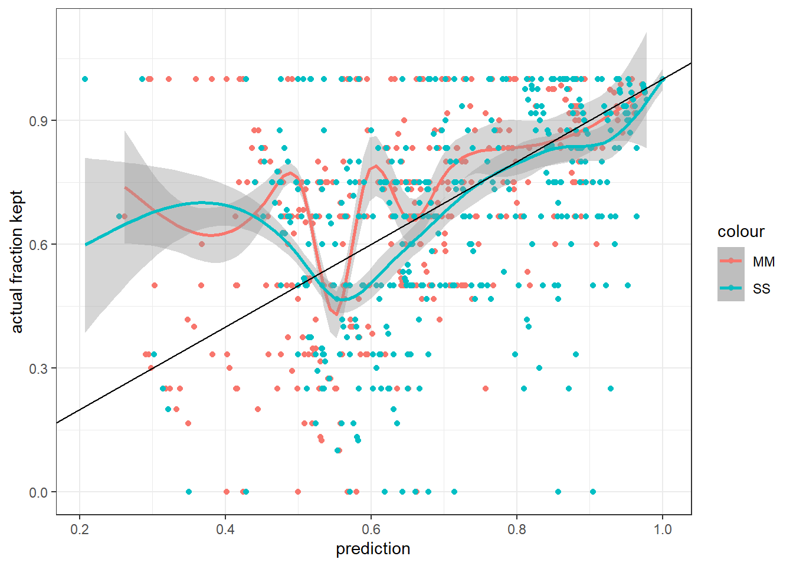

8 Parametric recoverability of preferences
Halevy, Yoram, Dotan Persitz, and Lanny Zrill. “Parametric recoverability of preferences.” Journal of Political Economy 126, no. 4 (2018): 1558-1593.
8.1 Experiment design
- Subjects made decisions that were similar to Anderoni & Vesterlund (2001): (close to) continuous, consumer’s problem. 22 choices. Used these to estimate preferences 2 different ways. \(\hat\theta_i^{SS}\) (sum of squares, nonlinear least squares) \(\hat\theta^{MM}\) (money metric).
- Subjects get 9 binary choices, which are designed to separate out \(\hat\theta^{SS}\) and \(\hat\theta^{MM}\)
8.2 The “money metric”
The consumer’s problem is: \[ \max_{x\in\mathbb R^k_+} u(x)\quad\text{subject to: } p^\top x\leq w \] where:
- \(x\) is a vector describing a bundle of goods.
- \(k\) is the number of goods (i.e. \(\mathrm{length}(x)=k\))
- \(p\) is a vector pf prices (again, \(\mathrm{length}(p)=k\))
- \(u\) is the consumer’s utility function of bundle of goods \(x\)
- \(w\) is the consumer’s budget
Suppose that a consumer chooses \(x\) when faced with prices \(p\) and budget \(w\). This generates utility \(u(x)\). The money metric identifies the cheapest budget \(m'\) where the consumer could have purchased a bundle \(y\) such that \(u(y)\geq u(x)\). That is: \[ m(x,p,u)=\min_{y\in\mathbb R^k_+}p^\top y\quad\text{subject to: } u(y)\geq u(x) \] Example: Suppose that we have Cobb-Douglas preferences \(u(x)=x_1^\alpha x_2^{1-\alpha}\), budget \(w\) and price \(p\). Then in this instance:
\[ \begin{aligned} m(x,p,u)&=\min_{y\in \mathbb R^2_+} p^\top y\quad\text{subject to: } u(y)\geq u(x)\\ \text{Lagrangian: }\mathcal L&=p^\top y-\lambda(u(x)-u(y))\\ \text{equivalent to: }\mathcal L&=p^\top y-\lambda(\log u(x)-\log u(y))\\ &=p^\top y-\lambda\left(\log u(x)-\alpha \log y_1-(1-\alpha)\log y_2\right)\\ \text{FOCs: }0&=p_1+\lambda\frac{\alpha}{y_1}\\ 0&=p_2+\lambda\frac{1-\alpha}{y_2}\\ 0&=\log u(x)-\alpha \log y_1-(1-\alpha)\log y_2 \end{aligned} \] (assuming that the utility constraint binds, which it will in Cobb-Douglas). Solving this: \[ \begin{aligned} -\lambda&=\frac{p_1y_1}{\alpha}=\frac{p_2y_2}{1-\alpha}\\ p_1y_1(1-\alpha)&=\alpha p_2y_2\\ y_2 &=\frac{p_1y_1(1-\alpha)}{\alpha p_2} \end{aligned} \] Substitute this back into the utility constraint: \[ \begin{aligned} 0&=\alpha\log x_1+(1-\alpha)\log x_2-\alpha\log y_1-(1-\alpha)\left(\log y_1+\log\left(\frac{p_1(1-\alpha)}{\alpha p_2}\right)\right)\\ \log y_1&=\alpha\log x_1+(1-\alpha)\log x_2-(1-\alpha)\log\left(\frac{p_1(1-\alpha)}{\alpha p_2}\right) \end{aligned} \] And so I could be made just as happy with: \[ m=p_1y_1+p_2y_2\leq p_1x_1+p_2x_2 \] In the paper, the authors use the fractional money metric: \[ M=1-m/w \] If this is close to zero, the consumer is close to optimization. If this is close to 1, then the consumer is not close to optimizing.
library(ggplot2)
library(latex2exp)
p<-c(1,2)
w<-30
alpha<-0.8
x<-c(w/(2*p[1]),w/(2*p[2]))
Ux<-x[1]^alpha*x[2]^(1-alpha)
xx<-seq(0,w,length=100)
yy<-(Ux/(xx^alpha))^(1/(1-alpha))
IndiffCurve<-(data.frame(xx,yy)
%>% mutate(Expenditure=xx*p[1]+yy*p[2])
)
MMbundle<-IndiffCurve[which.min(IndiffCurve$Expenditure),]
(
ggplot()
+geom_abline(aes(intercept=w/p[2],slope=-p[1]/p[2],color="Budget"))
+geom_path(data=IndiffCurve,aes(x=xx,y=yy,color="Indifference curve"))
+geom_abline(aes(intercept=MMbundle$Expenditure/p[2],slope=-p[1]/p[2],color="MM budget"))
+geom_text(aes(x=x[1],y=x[2],label="x"))
+geom_text(data=MMbundle,aes(x=xx,y=yy,label="y"))
+xlim(c(0,w/p[1]+1.2))+ylim(c(0,w/p[2]*1.2))
+theme_bw()
+xlab(TeX("$x_1$"))+ylab(TeX("$x_2$"))
#+xlim(c(0,20))+ylim(c(0,20))
)
M<-1-MMbundle$Expenditure/w
print(M)## [1] 0.17526878.3 Example using AV2001’s data
library(dplyr)
library(ggplot2)
library(tidyr)
params<-data.frame((read.csv("AV2001parameters.csv")))
colnames(params)[1]<-"Decision"
D<-read.csv("AV2001choices.csv")
D$id<-D$X
Keep<-(data.frame(D)
%>% gather(Decision,keep,keep1:keep8)
%>% mutate(Decision=(as.numeric(gsub("keep", "", Decision)))
)
%>% left_join(params,by="Decision")
%>% mutate(
fraction_kept = keep/income,
fraction_passed = (income-keep)/income,
)
)Keep %>% head %>% knitr::kable() | X | female | id | Decision | keep | income | pSelf | pOther | fraction_kept | fraction_passed |
|---|---|---|---|---|---|---|---|---|---|
| 1 | 0 | 1 | 1 | 10 | 40 | 3 | 1 | 0.25 | 0.75 |
| 2 | 0 | 2 | 1 | 40 | 40 | 3 | 1 | 1.00 | 0.00 |
| 3 | 1 | 3 | 1 | 40 | 40 | 3 | 1 | 1.00 | 0.00 |
| 4 | 0 | 4 | 1 | 40 | 40 | 3 | 1 | 1.00 | 0.00 |
| 5 | 1 | 5 | 1 | 20 | 40 | 3 | 1 | 0.50 | 0.50 |
| 6 | 0 | 6 | 1 | 38 | 40 | 3 | 1 | 0.95 | 0.05 |
Model: Assume subjects have Cobb-Douglas preferences:
\[ U(s,o)=s^\alpha o^{1-\alpha} \]
Define SSR as the error in both the self- and the other-direction, in terms of the fraction of tokens.
\[ \begin{aligned} \max\{s^\alpha o^{1-\alpha}\}&\quad s.t.\ 1=\frac{s}{p^s}+\frac{o}{p^o}\\ \max\{\alpha\log s +(1-\alpha)\log o\}&\quad s.t.\ 1=\frac{s}{p^s}+\frac{o}{p^o}\\ \max\{\alpha \log s+(1-\alpha)\log(p^o-s/p^s)\}\\ \max\{\alpha\log(k/p^s)+(1-\alpha)\log((1-k)/p^o)\}\\ \max\{\alpha\log(k)-\alpha\log p^s+(1-\alpha)\log((1-k))-(1-\alpha)\log p^o\}\\ \max\{\alpha\log(k)+(1-\alpha)\log(1-k)\}\\ \end{aligned} \]
First-order condition: \[ \begin{aligned} 0=&\frac{\alpha}{k^*}-\frac{1-\alpha}{1-k^*}\\ (1-k^*)\alpha&=k^*(1-\alpha)\\ k^*&=\alpha \end{aligned} \] So if we define SSR as: \[ \begin{aligned} SSR(\alpha)&=\sum_{t=1}^T\left((\alpha-k_t)^2+(1-\alpha-(1-k_t))^2\right)\\ &=\sum_{t=1}^T\left((\alpha-k_t)^2+(1-\alpha-1+k_t)^2\right)\\ \text{FOC: } 0&=\sum_{t=1}^T\left(-2(\hat\alpha-k_t)+2(1-\hat\alpha-1+k_t)\right)\\ &=2T\left(-\hat\alpha+\bar k+1-\hat\alpha-1+\bar k\right)\\ &=2T(2\bar k -2\hat\alpha)\\ \hat\alpha^{SS}&=\bar k \end{aligned} \] i.e. \(\hat\alpha^{SS}=\)average fraction kept.
library(latex2exp)
MMaHat<-function(keep,income,pSelf,pOther) {
x<-cbind(keep/pSelf,(income-keep)/pOther)
xx<-seq(0.01,max(income/pSelf),length=1000)
MM_SSR<-function(alpha) {
Ux<-x[,1]^alpha*x[,2]^(1-alpha)
MM<-0*Ux
for (ii in 1:length(Ux)) {
yy<-(Ux[ii]/(xx^alpha))^(1/(1-alpha))
m<-min(pSelf[ii]*xx+pOther[ii]*yy)
MM[ii]<-(1-m/income[ii])
}
sum(MM^2)
}
optim(0.5, MM_SSR)$par
}
ESTIMATES<-(Keep
%>% group_by(id)
%>% summarize(ahatSS = mean(fraction_kept),
ahatMM = MMaHat(keep,income,pSelf,pOther))
)(
ggplot()
+stat_ecdf(data=ESTIMATES,aes(x=ahatSS,color="Minimize SSE",linetype="Estimates"))
+stat_ecdf(data=ESTIMATES,aes(x=ahatMM,color="Minimize Money metric",linetype="Estimates"))
+theme_bw()
+geom_vline(aes(xintercept=c(0.5,1),linetype="Some important values"))
+xlab("Estimate")+ylab("Empirical cumulative density")
)
(
ggplot(data=ESTIMATES,aes(x=ahatSS,y=ahatMM))
+geom_point()
+theme_bw()
+xlab("Sum of squares estimate")+ylab("MM estimate")
+geom_abline(intercept=0,slope=1,color="red")
+geom_vline(xintercept=0.5,color="blue")
+geom_hline(yintercept=0.5,color="blue")
)
Which one makes better predictions?
Leave-one-out cross-validation: For each participant, estimate \(\alpha\) using all but observation \(t\). How well does this predict the choice in row \(t\)?
aMM<-c()
aSS<-c()
for (rr in 1:dim(Keep)[1]) {
ii<-Keep$id[rr]
UseData<-Keep[1:dim(Keep)[1]!=rr,] %>% filter(id==ii)
aMM[rr]<-MMaHat(UseData$keep,UseData$income,UseData$pSelf,UseData$pOther)
aSS[rr]<-mean(UseData$fraction_kept)
}
LOOEstimates<-cbind(Keep,data.frame(aMM,aSS))head(LOOEstimates) %>% knitr::kable()| X | female | id | Decision | keep | income | pSelf | pOther | fraction_kept | fraction_passed | aMM | aSS |
|---|---|---|---|---|---|---|---|---|---|---|---|
| 1 | 0 | 1 | 1 | 10 | 40 | 3 | 1 | 0.25 | 0.75 | 0.5351562 | 0.5357143 |
| 2 | 0 | 2 | 1 | 40 | 40 | 3 | 1 | 1.00 | 0.00 | 0.5000000 | 1.0000000 |
| 3 | 1 | 3 | 1 | 40 | 40 | 3 | 1 | 1.00 | 0.00 | 0.7659180 | 0.8773810 |
| 4 | 0 | 4 | 1 | 40 | 40 | 3 | 1 | 1.00 | 0.00 | 0.6974182 | 0.6809524 |
| 5 | 1 | 5 | 1 | 20 | 40 | 3 | 1 | 0.50 | 0.50 | 0.7099609 | 0.7119048 |
| 6 | 0 | 6 | 1 | 38 | 40 | 3 | 1 | 0.95 | 0.05 | 0.9787109 | 0.9783333 |
(
ggplot(LOOEstimates)
+geom_point(aes(y=fraction_kept,x=aMM,color="MM"))
+geom_smooth(aes(y=fraction_kept,x=aMM,color="MM"))
+geom_point(aes(y=fraction_kept,x=aSS,color="SS"))
+geom_smooth(aes(y=fraction_kept,x=aSS,color="SS"))
+geom_abline(intercept=0,slpoe=1)
+ylab("actual fraction kept")
+xlab("prediction")
+theme_bw()
)
LOOEstimates %>% summarize(
MM_MSE = mean((fraction_kept-aMM)^2),
SS_MSE = mean((fraction_kept-aSS)^2),
) %>% knitr::kable()| MM_MSE | SS_MSE |
|---|---|
| 0.1093653 | 0.0506717 |
8.4 For this paper
Data available here.: https://raw.githubusercontent.com/persitzd/RP-Toolkit/master/Data%20Files/Data_HPZ_2018.csv
From the documentation:
% file_path is the path (including name file) to the data file to be turned to a matrix
% locations is a 6-length vector:
% 1 - column number of Subject ID in the matrix
% 2 - column number of observation number of the subject
% 3 - column number of the quantity of good 1 chosen by the subject.
% 4 - column number of the quantity of good k chosen by the subject.
% the columns of quantities of goods 1 to k are in locations(3):locations(4).
% 5 - column number of the max quantity of good 1 (=1/price).
% 6 - column number of the max quantity of good k (=1/price).
% the columns of max quantities of goods 1 to k are in locations(5):locations(6). D<-read.csv("Data_HPZ_2018.csv",header=F)
colnames(D)<-c("ID","ObsNum","Good1","Good2","Max1","Max2")
D<-D %>% mutate(
Price1=1/Max1,Price2=1/Max2,
Budget = Good1*Price1+Good2*Price2)
D %>% head() %>% knitr::kable()| ID | ObsNum | Good1 | Good2 | Max1 | Max2 | Price1 | Price2 | Budget |
|---|---|---|---|---|---|---|---|---|
| 201 | 1 | 70.2 | 10.4 | 100.00 | 34.92 | 0.0100000 | 0.0286369 | 0.9998236 |
| 201 | 2 | 10.0 | 40.0 | 20.00 | 80.00 | 0.0500000 | 0.0125000 | 1.0000000 |
| 201 | 3 | 30.0 | 30.0 | 61.57 | 58.50 | 0.0162417 | 0.0170940 | 1.0000708 |
| 201 | 4 | 69.6 | 19.8 | 98.67 | 67.26 | 0.0101348 | 0.0148677 | 0.9997616 |
| 201 | 5 | 40.0 | 40.0 | 80.00 | 80.00 | 0.0125000 | 0.0125000 | 1.0000000 |
| 201 | 6 | 60.0 | 10.0 | 100.00 | 25.00 | 0.0100000 | 0.0400000 | 1.0000000 |
% The function formats a data file to a matrix
% file_path is the path (including name file) to the data file to be turned to a matrix
% column 1 is the Subject ID in the matrix.
% column 2 is observation number of the subject.
% columns 3-4 are the actual choice that was made.
% starting column 5 and onwards, every pair of of columns (i.e. (5,6), (7,8), (9,10), ...)
% represent a bundle that the consumer could have chosen.
% the number of optional bundles can differ between observations.DFinite<-(
read.csv("Data_CFGK_2007.csv",header=F)
%>% data.frame()
)
colnames(DFinite)<-c("id","ObsNum","Choice1a","Choice1b","Choice2a","Choice2b")
DFinite %>% head() %>% knitr::kable()| id | ObsNum | Choice1a | Choice1b | Choice2a | Choice2b |
|---|---|---|---|---|---|
| 201 | 1 | 30.3 | 33.7 | 69.7 | 59.7 |
| 201 | 2 | 25.0 | 33.0 | 42.0 | 81.7 |
| 201 | 3 | 45.5 | 20.1 | 57.5 | 96.6 |
| 201 | 4 | 13.0 | 70.9 | 48.4 | 97.0 |
| 201 | 5 | 46.2 | 2.9 | 50.3 | 36.4 |
| 201 | 6 | 40.1 | 20.5 | 73.6 | 45.1 |